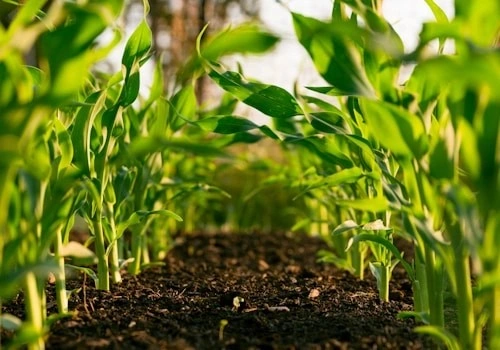
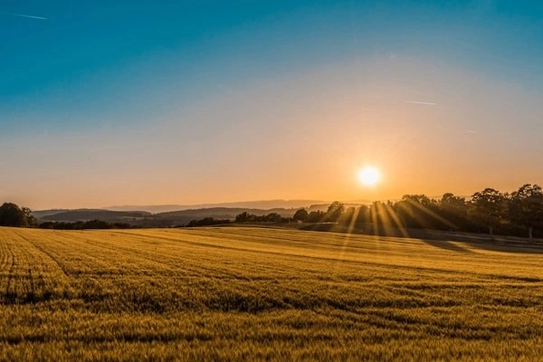

Mission
We believe everyone deserves access to clean, nutritious food. No pesticides, no shortcuts — just real produce from real farmers.

Vision
By 2030, we aim to be carbon-neutral across our entire supply chain — from soil to delivery van.
Journey
Started as a single market stall in Chennai.
Expanded network across Tamil Nadu districts.
Stackly.in brings organic food across Tamil Nadu.
Serving Tamil Nadu communities with same-day delivery.
People
Founder & CEO
Operations
Quality Lead
Farm Relations
Founded
Team Members
Partner Farms
Locations
Farms
Voices
FAQ
Every farm must hold FSSAI Organic certification and pass annual quality audits.
We're a for-profit B-Corp committed to social and environmental standards.